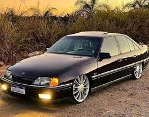

MODELOS DO OMEGA CD
Cmega cd 4.1

O Omega fez a sua história em todo o mundo
O nacional contava com itens que estavam disponíveis apenas aos modelos importados. Confira detalhes do Omega CD 4.1!
O Opala fez a sua história em todo o mundo e ficou marcado pelo seu carisma e, até hoje, é marcado pelo seu estilo e esportividade.
Para entrar em seu lugar, a GM precisava apostar em um modelo compatível à onda de importados da época. E é daí que chega o Omega CD 4.1!
O Omega tinha uma grande lista de equipamentos e foi o primeiro nacional a chegar com CD player como opção.
Omega cd 2.0
.jpeg)
O Chevrolet Ômega foi lançado em 1992 como um carro de luxo. Ele foi produzido pela primeira vez na Europa pela Opel, que era uma subsidiária da General Motors. O Ômega foi criado como um carro de grande porte para competir com outros modelos de luxo do mercado, como o Ford Versailles e o Volkswagen Santana.
No Brasil, o Chevrolet Ômega foi apresentado ao público em 1992, durante o Salão do Automóvel de São Paulo. O modelo, que chegou às concessionárias brasileiras em 1993, foi um sucesso imediato entre os consumidores que buscavam um carro espaçoso, confortável e com um design moderno.
Em 1998, a Chevrolet decidiu interromper a produção do Ômega no Brasil, devido à queda nas vendas. O modelo continuou sendo produzido em outros países, mas no Brasil, ele ficou marcado como um carro de luxo que foi sucesso durante a década de 90.